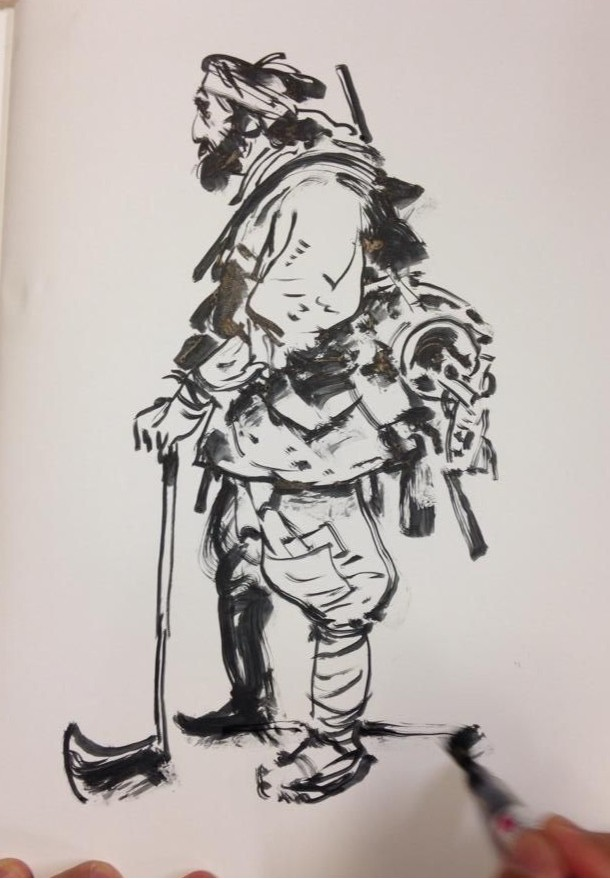
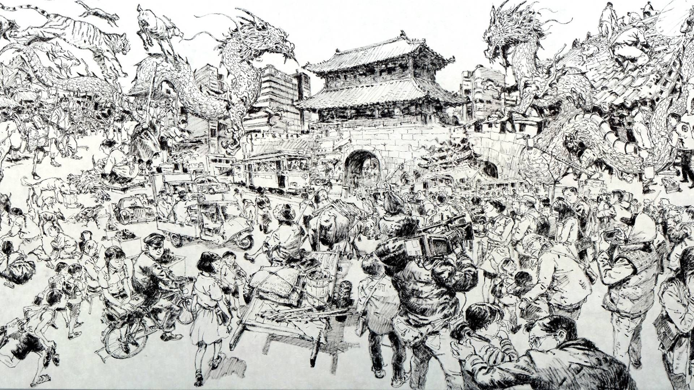
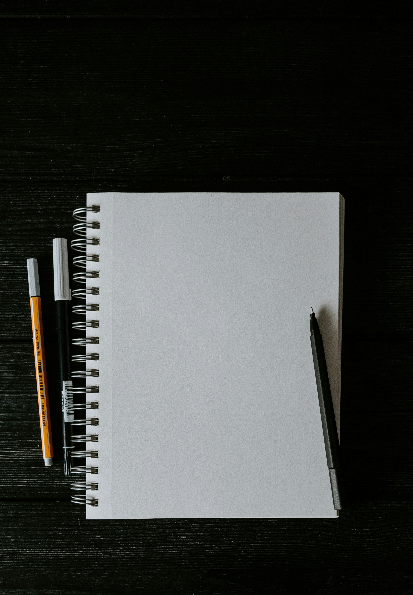

A arte de Desenhar
Aprenda os fundamentos, no seu tempo, e descubra que desenhar não é dom: é algo que qualquer um consegue aprender.
Fundamentos do Desenho
Linha
Treine os principais tipos de linha para criar qualquer desenho
Forma
Qualquer desenho pode ser construído utilizando formas simples.
Luz e Sombra
Perceba de onde vem a luz e como ela revela o volume.
Perspectiva
Entenda como as formas ocupam o espaço e ganham profundidade.
Meus desenhos




Por que desenho é importante para mim
O desenho faz parte da minha vida desde criança. Eu copiava tudo o que assistia, fossem desenhos, filmes ou jogos, movido pelo sonho de que um dia seria capaz de criar meus próprios personagens.
Com o tempo, o desenho se tornou muito mais do que um hobby: foi ele que me ensinou a aprender. Descobri que toda área, seja um hobby ou uma matéria, tem seus fundamentos, e que só evoluímos de verdade quando dominamos a base.

Como começar
Qualquer pessoa pode aprender a desenhar. Você só precisa dar o primeiro traço.
Separe o básico
Papel, um lápis e uma borracha bastam. Use o que você já tem.Escolha algo simples
Uma caneca, uma folha ou qualquer coisa que você goste. Observe antes de riscar.Desenvolva o hábito
Dez minutos diários rendem mais do que uma longa sessão por mês. Mantenha um caderno só para rabiscos e não tenha medo de errar.Lembre-se: Aprender a desenhar não precisa ser maçante. Comece desenhando algo de que você goste!